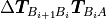
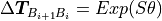
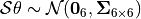
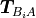
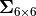

pytransform3d.transformations.random_transform¶
- pytransform3d.transformations.random_transform(rng=Generator(PCG64) at 0x7F1296726580, mean=array([[1., 0., 0., 0.], [0., 1., 0., 0.], [0., 0., 1., 0.], [0., 0., 0., 1.]]), cov=array([[1., 0., 0., 0., 0., 0.], [0., 1., 0., 0., 0., 0.], [0., 0., 1., 0., 0., 0.], [0., 0., 0., 1., 0., 0.], [0., 0., 0., 0., 1., 0.], [0., 0., 0., 0., 0., 1.]]))[source]¶
Generate random transform.
Generate , with  and . The mean  and the covariance  are parameters of the function.
Note that uncertainty is defined in the global frame B, not in the body frame A.
- Parameters:
- rngnp.random.Generator, optional (default: random seed 0)
Random number generator
- meanarray-like, shape (4, 4), optional (default: I)
Mean transform as homogeneous transformation matrix.
- covarray-like, shape (6, 6), optional (default: I)
Covariance of noise in exponential coordinate space.
- Returns:
- A2Barray-like, shape (4, 4)
Random transform from frame A to frame B